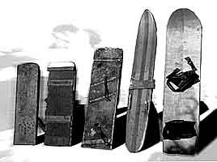
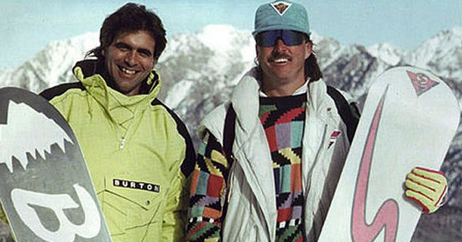
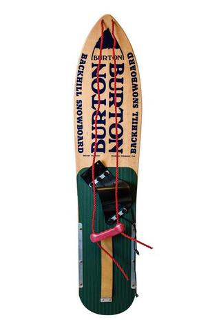

Le Snowboard ou surf des neiges est un descendant logique du surf des mers et du skateboard. Le surf est une pratique sportive originaire d'Hawaï au moins au xve siècle et représente un élément important de la culture de ces îles. Le surf a aussi inspiré le skateboard, initié en 1950 et qui se développera plus vite, le snowboard sera plus long à être mis au point et à se répandre mais gardera l'esprit de ces 2 sports.
On peut retrouver les prémices du snowboard chez les Mongols au XVIIIe siècle puis plus récemment dans les années 1920 : dès cette époque, il semble que de nombreuses personnes se soient essayées à glisser sur la neige debout sur une planche indépendamment de toute invention ou commercialisation.

Vern Wicklund fût de ceux-ci: à 13 ans, en 1917 il fabrique une luge modifiée pour tenir debout dessus. Avec l'aide des frères Burgeson, il dépose le premier brevet de ce qui ressemble à un snowboard en 1939. C'est la naissance du "Sled".
Contrairement à une luge, leur engin possède des attaches pour maintenir les pieds accrochés et, précurseur du "Snurfer", une corde de contrôle. Le texte de leur brevet mentionne clairement que l'appareil est destiné à être utilisé debout et non assis. 5 Prototypes seulement seront fabriqués.
Vous avez du mal à croire que cet engin a déjà existé? Regardez cette vidéo les montrant en train de tracer les premières courbes de l'histoire du snowboard:
Le modèle qui rencontrera vraiment le succès commercial sera cependant le "snurfer", l'ancêtre direct du snowboard moderne. Il a été créé en 1965 par Sherman Poppen, à Muskegon, dans le Michigan. Poppen observait ses filles faire de la luge lorsque l'une d'entre elles, âgée de 11 ans, se mit à descendre la pente debout sur sa luge. Afin de simplifier la manœuvre, Poppen pense à attacher deux skis ensemble et y accroche une corde à l'avant, afin de diriger l'engin. Sa femme nomme son invention Snurfer, de l'anglais snow (neige) et surf.
Bientôt, tous les amis de ses filles en réclament un. Devant l'admiration des jeunes du quartier, il décide alors de développer son concept, le commercialisant d'abord dans son village puis par le biais des magasins de sports et de jouets. Il dépose une licence à la Brunswick Corporation afin de produire son snurfer. Il est vendu entre $10 et $30. Poppen en vendit environ un demi million d'unités entre 1966 et 1976. Mais comme les jeux de Twister à cette époque, ils n’étaient considérés que comme des jouets pour enfants
Poppen organisa aussi des compétitions de Snurfer dans les années 1970 qui attirèrent des pratiquants de tous les États-Unis. Ces compétitions permirent des innovations et des améliorations du matériel. En 1979, un certain Jake Burton Carpenter se présenta à l'une de ces compétitions avec un prototype amélioré permettant de fixer les pieds à la planche : le premier "vrai" snowboard. C'est un modèle de Snurfer amélioré avec notamment un système d'attache permettant de fixer solidement les bottes à la planche. Carpenter continue de diriger la compagnie Burton, qui est devenue la plus grande marque de snowboard du monde après des années d'adversité avec Tom Sims, qui lui aussi créea sa marque "Sims". Cette course à l'innovation entre ces deux figures historiques fût très bénéfique à l'amélioration technique et commerciale de l'industrie du snowboard

Le snowboard a mis longtemps à s'imposer et à obtenir une véritable reconnaissance. D’abord interdite par les stations de sports d'hiver, cette pratique a ensuite été acceptée par presque toutes les stations dans les années 1990.
Au fil du temps, le matériel du snowboard a beaucoup évolué. Ce sport s'est divisé en trois branches qui utilisent des planches très différentes : le freeride, l’alpin et le freestyle.
Ce matériel est parfois confondu avec celui de freestyle, car sa forme s'y apparente. Toutefois, il s'agit bien d'un matériel spécifique. Les planches « freeride » (ou planches hors piste), sont plus longues que celles de freestyle. Plus solides aussi, rigides, ce sont des planches stables pour tracer sa marque dans la poudreuse. Comme celles de freestyle, elles sont larges, symétriques et bispatulées. On les utilise en général avec le même type de fixation et des chaussures souples. Il s'agit de matériel pour le hors piste. À noter que la flexibilité de la planche est différemment orientée par rapport aux planches freestyles. Les freerides sont plus rigidifiées sur la partie arrière pour avoir davantage de relance et puissance sur l'appui arrière. Le modèle freeride est appelé "directionnel" dans le langage plus technique.
En l'an 2000, la planche « freestyle » (planche à neige acrobatique1) est le matériel le plus communément rencontré en France. Les planches sont plus souples que les alpines, elles sont larges, courtes, symétriques, et les deux extrémités sont relevées de façon égale. Ce type de forme, appelé twin-tip permet un déplacement dans les deux sens indifféremment. La planche n'a plus d'avant et d'arrière prédéfinis21.Ces planches peuvent contenir plusieurs courbes, la plus courante est la cambrée (camber) sous la même forme d'un arc dans le milieu finissant plates[Quoi ?] à chaque emplacement des fixations et aux extrémités relevées, ce type de planche est propice à tous les types de planchistes. Pour les amateurs de parc à neige (snowpark), il existe la forme non-cambrée (rocker) dans ce sens nous avons la forme inverse du cambré, c'est-à-dire, nous allons avoir l'axe de l'arc inverse du milieu jusqu'aux deux extrémités de la planche, ce qui va donner une meilleure flexibilité et maniabilité à la planche dans des vitesses plus lentes et des mouvements moins contrôlés. Ces planches sont généralement utilisées avec des chaussures souples (appelées « soft boots »).
Les planches alpines sont conçues pour une utilisation sur piste damée. Elles présentent donc, de même que des skis, une assez grande rigidité en flexion longitudinale ainsi qu'une très bonne accroche sur la carre. Elles sont les plus appropriées pour enchaîner sur piste des virages sans déraper, appelés « virages coupés » (« conduite coupée » ou carving). Les chaussures utilisées sont rigides (elles sont parfois désignées par l'anglicisme hardboots) ; elles ressemblent aux chaussures de ski mais sont plus souples que ces dernières.